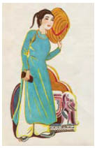

Vết gươm chém trên da một trong những nhà thuyết giáo trông hãy còn mới. Nerron bắn chết hắn trước khi những ngón tay bẩn thỉu kịp dây bệnh điên lên da gã. Nam nhân ngư đã bị một tên chạm phải, nhưng điều đó có vẻ chẳng làm hắn ta lo lắng gì. Có lẽ hắn tự cho rằng mình miễn dịch với bệnh điên của con người. Eaumbre đã sớm nhận ra những dấu chân mà họ đang lần theo không phải của Louis, nhưng hắn không quay lại. Tòa lâu đài mọc trên đống đổ nát trông thật hấp dẫn khó cưỡng.
Tòa lâu đài làm Nerron nhớ đến những pháo đài bộ tộc da đá mặt trăng xây dựng cách đây rất lâu để chống lại bộ tộc da đá mã não. Ngày nay Kamien dùng chúng làm nhà ngục, vì chúng nằm rất sâu dưới lòng đất.
Những kẻ điên loạn rách nát là mối nguy hiểm duy nhất mà họ gặp phải trên những con phố hoang vắng, nam nhân ngư bắn hạ bọn họ dễ dàng như hạ những chú chim bồ câu bằng đất sét. Có vẻ như bùa phép của Kẻ Tàn Sát Phù Thủy cũng bị mưa gió bào mòn suốt nhiều thế kỷ qua như chính thành phố mà ông ta cai trị. Những khuôn mặt hóa đá nhìn xuống bọn họ từ những bức tường khiến Eaumbre sợ hãi, trong khi Nerron vẫn tỉnh như không - chúng chỉ minh chứng cho việc đám người thịt mềm giống loại người như hắn như thế nào.
Khi đến được chân cầu thang dẫn lên tòa lâu đài, bọn họ tìm thấy dấu chân của Reckless và Cáo như những vết cháy sém trên bậc thang phủ đầy tuyết. Tuyết rơi ngày một dày, Nerron cảm giác những bông tuyết đóng băng nhỏ xíu chỉ như muỗi đốt trên da. Gã ghét trời lạnh giá, và trong một thoáng gã thèm thuồng đến phát ốm cảm giác ấm áp khi ở trong dạ con ấm áp của Mẹ Đất. Ngược lại nam nhân ngư lặng lẽ vốc tuyết xoa lên làn da khô khốc trước khi bắt đầu leo lên những bậc thang.
Khung cảnh đang chờ họ ở cuối bậc thang chứng tỏ rằng những câu chuyện về tòa lâu đài bị che giấu và cánh cổng sắt của nó không chỉ là sản phẩm tưởng tượng của một nhà thơ nào đó. Những xác chết cháy đen và bị cắn nát là thật, nhưng Nerron không thể tìm ra xác Reckless lẫn xác Cáo trong đó.
Bọn chúng đâu rồi? Những dấu vết trên khu đất phủ đầy tuyết chỉ có thể đưa đến một câu trả lời: đối thủ của gã đã vào bên trong tòa lâu đài.
Chết tiệt. Hắn làm thế nào chứ?
Sắt bắt đầu nóng đỏ lên ngay khi Nerron tiến gần đến cánh cổng. Eaumbre kéo gã lại khi kim loại đang dần thành hình một cái mõm. Mõm, móng vuốt. Cả cánh cổng đang sống dậy. Những cái cổ có gai đang uốn cong, những bàn chân đầy vảy, đỏ như nham thạch, những móng vuốt mọc ra từ sắt.
Nam nhân ngư vấp phải những xác chết khi đang bước lùi lại.
Nhưng Guismund không mong đợi một gã thợ săn kho báu với làn da đá. Trong thời đại của ông ta, sự hiện diện của người Goyl trên mặt đất chẳng gì khác hơn một câu chuyện cổ tích bí ẩn.
Nerron mặc một chiếc áo làm từ da kỳ nhông để bảo vệ mình chống lại móng vuốt, loại áo đã giúp Kamien và Hentzau thoát chết trong Đám Cưới Đẫm Máu. Cây rựa ngọc thạch được một gã Goyl thợ rèn đặc biệt gọt giũa dùng cho cánh cổng sắt chém qua những cổ và móng vuốt như thể cánh cổng của Guismund chỉ sinh ra những quái vật làm từ sáp. Nerron chặt chém và đâm chọc cho đến khi quần áo gã cứng ngắc vì sắt đang nguội đi. Reckless không có trong đám xác chết, vậy nên phải có một con đường vào được bên trong! Nerron bổ đôi một cái đầu sói trước khi gã bị nó nhai mất sọ, chặt phăng những bàn chân đang giương ra cả tá móng vuốt nhọn hoắt. Không có Reckless trong đám xác chết. Phải có một đường vào!
Cánh tay gã đã trở nên nặng nề khi rốt cuộc nam nhân ngư cũng đến giúp hắn. Sức nóng của sắt làm bỏng rát da gã, nhưng gã vẫn chiến đấu ngoan cường. Họ nhanh chóng bị ngập đến gối trong đống kim loại vỡ vụn. Tiếng thở hổn hển vang lên trong tai bọn họ. Không có Reckless trong đám xác chết, Nerron! Chết tiệt, phải có đường vào chứ. Và đúng như vậy: đột nhiên sắt chỉ còn là sắt và cánh cổng uốn thành hình một diềm trang trí toàn những đầu lâu. Huy hiệu của Guismund xuất hiện trên bề mặt kim loại vẫn còn nóng đỏ, một khe hở khó nhìn thấy hiện ra.
Ngay cả làn da đá của Nerron cũng đau đớn khi chạm vào sắt nóng. Đau đến độ gã tưởng như xương cốt mình đang tan chảy ra. Nhưng người Goyl xem nhẹ đau đớn hơn đám người phàm, và cuối cùng Nerron cũng xoay xở để nhét ngón tay gã vào khe hở. Gã vật lộn mở khe hở ra đủ rộng để có thể lách vào. Nam nhân ngư bốc mùi cá cháy sau khi đã qua được bên kia cánh cổng cùng với gã, sau lưng họ cánh cổng đóng lại với một tiếng động như tiếng chuông trầm đục.
Khí lạnh chào đón họ khiến nam nhân ngư phát ra một tiếng thở phào nhẹ nhõm, ngay cả Nerron cũng biết ơn vì sự xoa dịu nó mang đến cho làn da bỏng rát của gã. Gã đánh hơi thấy bùa phép của phù thủy trong bóng tối vây quanh họ, như bộ lông của một con hắc miêu. Eaumbre nhìn gã sợ hãi khi hắn ta nghe thấy những giọng nói, nhưng Nerron chỉ mỉm cười. Bùa phép-bước chân. Gã biết một tay thợ săn kho báu đã phát điên trong một tòa lâu đài bị yểm bùa, nhưng không có dấu vết nào rõ ràng hơn. Một khi những giọng nói thức dậy, người ta có thể nghe thấy chúng trong nhiều giờ. Người ta chỉ đơn giản là phải đi theo chúng.
“Ngươi ở lại đây canh chừng cửa!” gã nói với nam nhân ngư. Có lẽ Reckless đang trên đường quay ra cùng với chiếc nó. Nhưng Eaumbre lắc đầu.
“Không, cảm ơn!” hắn thì thẩm. “Ta làm gác cổng đủ lâu rồi. Tất cả những gì ta tìm thấy sẽ thuộc về ta, đúng không?”
“Miễn đó không phải là cây nỏ thần.”
Khuôn mặt vảy dãn ra thành một nụ cười khinh miệt.
“Phải rồi. Ta quên mất điều đó. Một chiếc nỏ thần không phải là thứ ngươi cần,” Nerron lẩm bẩm. “Nhưng chắc chắn ngươi sẽ tìm thấy ở đây những kho báu mà ngươi có thể đem dâng tặng những cô gái. Ta chắc là đủ cho cả tá cô nàng.”
Tia nhìn của sáu con mắt trở nên lạnh lùng. “Chúng ta chỉ yêu duy nhất một người mà thôi. Cả đời.”
“Hẳn rồi. Chỉ có điều họ không định sống cả đời dưới sự bảo vệ của các ngươi.” Nerron bước đến hành lang đầu tiên và nghe ngóng. Không có gì. Nhưng ở cả hai hành lang còn lại vang vọng tiếng những kẻ đã chết. Rõ ràng là Reckless và Cáo đã chia nhau ra. Người ta không nên phí thời gian khi cái chết đang giăng tổ trên ngực.
Nam nhân ngư không nói lời nào biến mất vào trong hành lang đầu tiên. Nerron chọn cho mình đường bên trái.